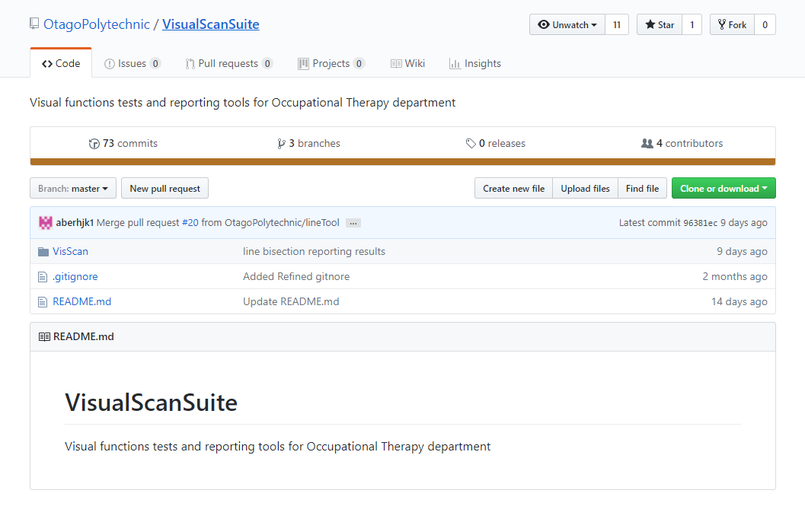

Professional proficiency
Question 1. How often do you attend scheduled group meetings/scrums?
5/5
I attended all meetings and scrums over the course of project two. this was really important because having such a dynamic workflow
this semester it was imperative that we were all present to discuss any changes to the sprint outcomes. Keeping a solid communication flow has allowed us to achieve the goals we set out to achieve. I also made sure to go to all meetings with
external clients, having numerous meetings with Dr Mary Butler, occupational therapists and Clare Fraser over the duration of Project 2.
Throughout the semester, I have been the primary contact for the Visual Scan Suite. I have enjoyed the chance to improve my professional email writing
with an external client and believe I have always shown professionalism in regards to communication with Dr Mary Butler.
Question 2. How well did you communicate with others in your group or subgroup?
4.5/5
I gave myself 4.5 out of 5 for this as although I believe I communicate with people really well, there is always room for improvement. I found that every now and again when I was stressed I would go into my own wee bubble where I would focus more on my own work load and spend less time helping others. This is something that I'm trying really hard to stop doing. In the last few weeks I've been making a conscious effort to be more available to others questions even when they may not directly relate to my work.
As a team we were very fortunate to have really capable members and everyone was open to ideas and changes which allowed open dialog. This open dialog allowed us to clearly plan out our tasks and divide the work between the subgroups. Having an open dialog and good communication channels also allowed us to discuss changes and respond to changes more rapidly.
This ultimately allowed the project to move forward at a faster rate and gave us a more robust final product.
This semester I have been mainly working in a subgroup as part of the larger commsoft team.For the API I worked with Matt; For the Visual Scan Suite I worked with Liam.
working in a smaller team I found to be particularly productive, the ability to bounce ideas around and quickly make a decision without having to consult numerous other people. I believe this
helped keep the project flow and speed of development really fast.
Another example of good communication practices is the continued use of Slack within the team, Slack is a communication tool used in teams to quickly communicate ideas and share files. As a team we were good at making sure we kept the Slack up to date with the latest
happenings during the sprints and general information that was needed. Below is an example of how I used Slack during my time as scrum master
Question 3. How well did you document your work throughout the project?
4/5
The documentation of my work has been something that I feel I could have done more of this semester,
I was sure to comment any code I wrote and helped write/complete any API Documentation.
However, often someone else would start the documentation writing then I would append my sections to those documents.
Question 4. How well did you respond to problems or changing requirements?
4.5/5
The CommSoft group projects went through many iterations and changes over project 2,
1. Having the SQL database ERD completely overhauled
2.Rewriting the API,]
3.Redesigning the Visual Scan Suite tobe usable on a wide range of tablets
4.PathMapper having the design and user requirements changing constantly.
I believe that I handled problems and changes really well, I consider myself very good at being able to adapt and therefore any change in requirements wasn't an issue for me. Working with
Dr Mary Butler as the main point of contact this semester has taught me how to manage the expectations of an external client and the rollercoaster that comes with the desire for more functionality.
Coming from a managerial background I have had alot of practice in dealing with problems and changing environments. The documentation of the group was also really helpful when having to backtrack or rewrite any code.
I started the pair programming with Matt Tucker as we undertook the creation of the ASP.net Web API part of Pathmapper. This started off by the creation of the SQL Database which would be used to talk with the API which could then be used by any application, in our case, the Pathmapper Android Application. Both having taken OOSD, web three and DB2 we had a fair idea of how to tackle the problem, ensuring that the database was scalable and in third normal form. Taking the knowledge from OOSD when making an API using ASP.net MVC we started by creating a simple GET request to get all the data we had in the database. It wasn’t too long before we ran into our first issue, when working with the ASP.net Project we had real issues with running the solution on two different computers as the NuGet package manager would complain that either my computer was missing packages or Matts’ computer was missing packages, whenever we tried to resolve the issue by installing the packages that were missing it still wouldn’t work. After much research into the problem via various avenues it was decided that we would on one computer. This wasn’t an issue as it allowed us to work together a lot to get it done in a more timely manner. This was a really good example of where the practice of version control can sometimes fall apart.
The creation of the back end was a really challenging and rewarding process. It was the first time that I had built a RESTful API using ASP.net MVC. This API was built to allow the passing of JSON information and images to the front end android application Pathmapper. We built the application to be as robust and scalable as possible such that other applications could eventually use the information in other projects. Having built a restful API previously in project one and web three, the syntax and general best practices around how an API works and the methods involved in making one was not an issue. We first created some simple GET requests to allow the front end to grab single garden item data. Then once we were confident that this was working correctly we moved on to returning an IEnumerable of a QRPoint, an IEnumerable allowed us to return a JSON encoded array of data members. This was particularly useful in allowing the map in Pathmapper to be populated with markers with the relevant details about that QRPoint (Plant, Statue etc).
The changing of the ERD was decided as the original version wasn't scalable and didn't correctly define the definition of the data that
we were required to store.
The original ERD was a three table design with an admin table:

The second ERD was a more complex design which allowed for scalability and correct defined the definition of what we were trying to store, allowing for unique attributes of an item, location data for a collection and image urls for use with the front end android application:
Technical proficiency
Question 1. What is the overall quality of your code like?
4.5/5
I believe the overall quality of my code has definitely improved from project one going into project two. As my programming knowledge grew from OOSD and ADS
I had a better understanding of what good code looks like and how to write good code myself. Throughout project two I always tried to follow best practices in regards to the code I wrote
keeping the SOLID principles at the forefront of anything I wrote. When writing the ASP.net backend API I made sure that all the GET requests methods were modular and had only one responsibility.
having the ability to work together with Matt during the coding process also helped ensure that any code that was written was up to both our standards.
One example of really clean re-usable code is that of the EncryptionUtilities class in the API. The EncryptionUtilities class is used to encode a password
via salting and hashing the password of a user of the API and also decrypt the password of a user when they are trying to login to the API front end.
This code is re usable with any login system with a backend database as accepts a string password, and returns a salted/hashed password in return using the built in .NET
RNGCryptoServiceProvider class.
Building on from this code, The Login Method in the AdminController was clear/concise with solid error checking.
This method followed the best practices of ASP.net security and general security practices by ensuring that the password entered once decrypted in the EncryptionUtilities class.

Another method that I believe shows good practices is that of the RegisterNewAdmin method. This method allows an admin to register a new admin to the API, this method makes sure that the
username chosen doesn't already exist in the database ensuring that we have unique users of the API, also have a enter password and reenter password input control as an extra bit of security.
Third Party QR Code addition
With the challenge of accurate GPS tracking currently it was decided that QR codes would be a great alternative to allow the user of Pathmapper to
find information about garden items. To allow an admin to create these QR codes via the front-end of the API, I was tasked with adding the ability to take the data from a QRPoint
and returning an image of a QR code that the app would be able to use to load the relevant information about that plant.
writing my own QR code creator was out of scope for this project so I turned to a third party library in order to create the QR codes.
I researched the different QR code generators available in the Nuget Package manager, and decided that the QRCoder library was the most appropriate for our problem.
This library is nice and easy to use, practically allowing me to create a QR Code in 5 lines of code.
Below is the code to create a QR Code for a QRPoint using the library:

Below is the front end for QR generation where you can create a QR Code fora single item:
Below is the front end to show and save a QR Code that was created by the controller method:
Question 2. How well did you follow best practices in development?
4.5/5
Throughout project two I believe that I followed best practices as much as possible. The use of an agile workflow following on from project one
has been a one example of a really efficient and good practice to do whilst developing software, this practice allowed us to consistently meet deadlines and enabled us to produce high quality code.
Another best practice was ensuring that we did user testing on our application. With Pathmapper, we ran user testing on around 15 people to ensure that the design was intuitive and any bugs that were found were taken care of.
With Pathmapper, because it may eventually be put on the play store I was tasked to update all the iconography to ensure that we weren't infringing on
any copyrighted material. I did this by sourcing all the icons from Icons 8 . This website provides free icons for commercial use.
During the initial production of the Visual Scan Suite in project one, some of the best practices for android were overlooked in regards to XML screen layout properties. This semester we decided to fix that.
We went about this by making the application display/scale properly for all tablets. This was done by adjusting the XML layouts from absolute values to match_parent and wrap_content. this allowed the application to scale correctly.
Using this as a guide. Android documentation - supporting multiple screen sizes
Question 3. How well did you use appropriate version control?
5/5
This semester we used git as our version control. We followed the accepted practices of git. where we would have a master branch and create our own branches off of the master for a certain task
, then once we were satisfied with the completion of the subtask we would generate a pull request. Once a pull request had been created, it was up to another member of the subgroup to review and accept before merging the new code into the master branch. Another
change that was useful was to create repositories for the individual projects. This meant that there was less merge conflicts and version differences between the members of the team

Image below shows the forking process of our Visual Scan Suite Repository
Question 4. To what extent do you think you contributed an equal portion of the overall project?
4.5/5
I believe I contributed an equal portion to the overall project, I had a firm grasp of what was happening in all stages of the SDLC for Visual Scan Suite, always attending internal and external meetings. I made significant contributions to the ASP.net API
with Matt allowing that part of the project to move forward quicker than anticipated. I also had input into the design phases of the Pathmapper application throughout however that I wasn't part of the front end team writing that code. Overall I believe that my contributions were
significant to the final product being ready.